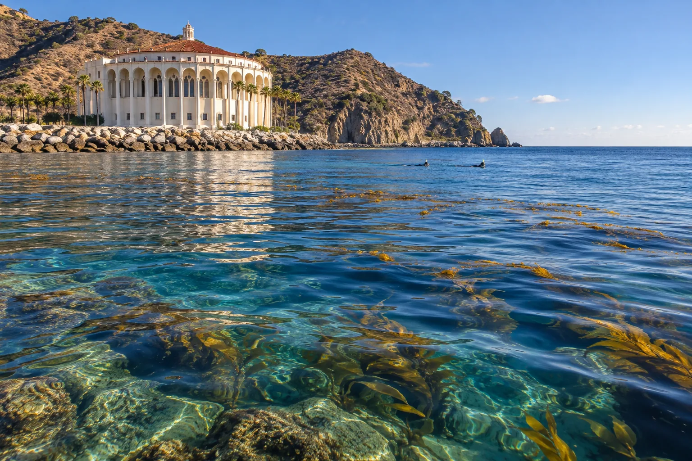

Casino Point
Île Catalina, Californie, États-Unis · plongée, snorkeling

Parc sous-marin devant le casino d’Avalon, avec kelp, garibaldis et épaves. Une plongée facile depuis le bord.
- Lieu
- Île Catalina, Californie, États-Unis
- Niveau
- Débutant
- Activités
- plongée, snorkeling
- Type d'eau
- Mer / océan
- Coordonnées
- 33.35, -118.33 (position approximative du secteur)
Dangers à connaître
- Circulation de bateaux.
- Eau fraîche.
Le conseil d'Ocean Buddy
Porte un gilet visible en surface : les bateaux passent devant le parc.
Ouvrir dans Ocean Buddy Télécharger sur l'App Store
Source : Fiche Ocean Buddy · septembre 2026 · à vérifier localement.